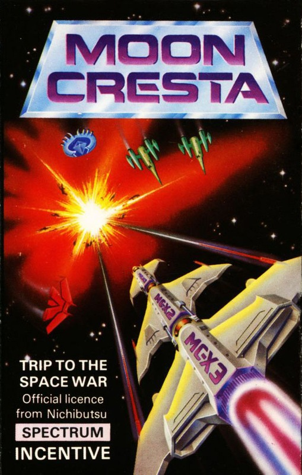
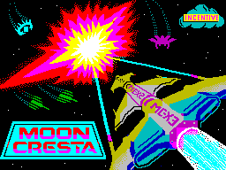
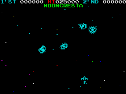
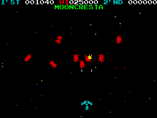

Moon Cresta


{kind=link}

| Publisher: | Incentive Software |
| Price: | £6.95 |
| Year: | 1985 |
| Source: | CRASH, Issue 14 |

Here’s a new game on an old theme that should get the blood racing again! Away with the namby-pamby arcade/adventures! For zap-happy arcade freaks Incentive’s new Moon Cresta will revive the good old rainy days spent hurling ten penny pieces into the maw of a dedicated arcade machine. This is a loving (and official) recreation of the Nichibutsu arcade original, right down to the attract mode with a colourful title page and a message reading, ‘Moon Cresta — A trip to the Space War — Try it Now! — You can get a lot of Fun and Thrills!’ The major change between this, the first ever home computer version, and the original is the panel allowing you to select between the redefinable keyboard controls and joystick options.

Moon Cresta is a classic shoot em up set against a downward scrolling starscape. Your three lives arrive at once as a three-stage rocket which flies to the top and separates, leaving the nose stage to descend afterwards to the base of the screen ready to do battle. If you lose that life then the two remaining stages repeat the process leaving you with the middle stage to fight on. The first stage has a single-firing laser, the second and third stages each have dual-firing lasers. Your craft moves left and right along the base of the screen while the nine different attack waves try to destroy you. There are four waves consisting of blue then yellow aliens (which split into a smaller alien when shot) and a red then magenta wave of fighters before you are faced with a docking of the first stage with the second for bonus points. The bonus is based on the time taken to dock as the top craft slowly descends, wavering about and guided by the left/right control and fire to thrust.
This bonus sequence is then followed by five waves of dancing aliens which include diagonally opposed asteroids and white blobs that turn wrap around missiles if not destroyed in time. Depending on how well you are doing you can earn the right to fight with either two or three stages together as the speed of the aliens hots up. The full display area is used with score lines superimposed at the top.
CRITICISM

on stage one screen one
‘This is a very, very close copy of the original, right down to the scrolling stars and the between-waves tune, and I’m pleased to say that it has also caught the exciting atmosphere of the original too. Really one of the best shoot em ups for an age. The level of difficulty and skill required is well pitched to make it one of those games you are just bound to come back to again and find hard to leave when you are playing it. Docking is not at all easy — I was fooled by first watching someone who had learned the knack and could do it almost every time. Fast reflexes and a strong right hand are needed to get those hi-scores on Moon Cresta. It’s a pity that being an officially licenced version it’s a pound or so more than it might have been, but nevertheless it’s still well worth the hours of aching hands at the price.’
‘It’s been a long, long long while since someone has had the guts to try and copy a true arcade game onto the Spectrum. Moon Cresta is one of the best, or should I say the best arcade copy I have yet seen. Personally I love these type of games for two main reasons first being that they are not complicated to play, where you have to learn rule after rule; and second, especially on the higher levels, it’s a great asset to have to have an uncanny amount of skill (or as Roger Kean puts it — ‘luck’). Getting down to the nitty gritty of the game and why I think it is brill, is that the graphics are very clear, precise and accurate to the original. They are fast and very smooth and an incredible amount of colour has gone into this game. Stars constantly scroll in the background, twinkling as they change colour. This game really puts you in the spot of the great Space War. Sound is also a prime achievement, faithfully reproduced from the original in all aspects, very punchy. This is one type of game that I never tire of except for my rapid-fire finger which wears out long before the enthusiasm. As you must be able to tell, I found Moon Cresta a tremendously addictive game.’

threatened by the Red Hordes
‘The attack waves in Moon Cresta might superficially be thought of as being similar to an old ‘Galaxian’ type of game, but they are much more sophisticated in their movements in fact, and well aided by the amazing graphics which are super-fast and completely flicker-free. The speed of the aliens, in fact, is astonishing on the higher levels, and turns your humble Spectrum into something that looks like a dedicated games machine. Playing Moon Cresta is very simple fun, the sort of soothing mindlessness that concentrates thought wonderfully! And concentration is needed! At a time when the emphasis tends to be on complicated arcade/adventures or third generation platform games, I think it’s brave of Incentive to release an old fashioned shoot em up like this, and I’m thankful that they have. Great fun!’
COMMENTS
| Control keys: | User definable, three needed |
| Joystick: | Hardly needed, but almost any via UDK |
| Keyboard play: | Very responsive |
| Use of colour: | Excellent |
| Graphics: | Extremely fast smooth and detailed |
| Sound: | Smashing |
| Skill levels: | Progressive difficulty |
| Lives: | 3 |
| Screens: | Nine attack waves plus docking sequence |
| General rating: | Excellent, playable, addictive and good value for shoot em up freaks. |
| Use of computer: | 89% |
| Graphics: | 91% |
| Playability: | 92% |
| Getting started: | 89% |
| Addictive qualities: | 90% |
| Value for money: | 89% |
| Overall: | 90% |